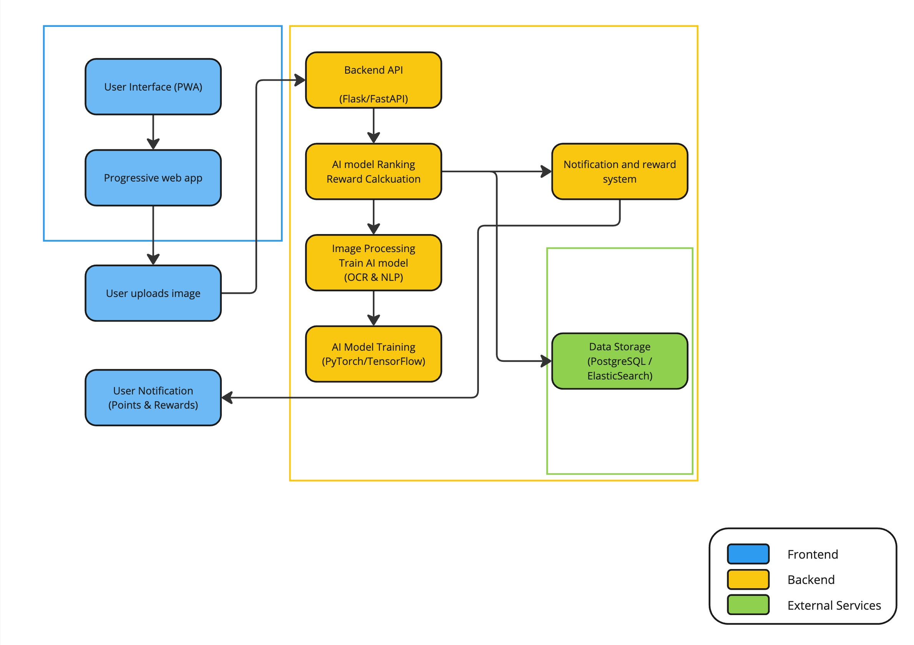

System Architecture Overview¶
The Only Menu system is designed to be a lightweight, scalable, and user-friendly tool for crowdsourcing restaurant menu data. The architecture is built around a Progressive Web App (PWA) and a flexible backend capable of handling AI-based image processing.
Data Flow Overview:
User Interaction: Users upload menu images via the PWA.
Backend Processing: The backend API receives the image, which is processed by the AI model.
AI Processing: The AI model extracts relevant data and ranks the image.
Data Storage: The extracted data is stored in the database.
User Reward: The system calculates and awards points to the user.
Notification: Users are notified of their points and can redeem rewards.
Core Components:
Frontend (PWA): Built with React.js for a responsive and intuitive user experience.
Backend API: FastAPI/Flask for Python backends, or Express.js for Node.js backends.
AI Processing: Utilizes TensorFlow/Tesseract for OCR and NLP.
Data Storage: PostgreSQL and Elasticsearch for efficient data management.
Notification System: Django Celery or Node.js Bull for managing user notifications and rewards.
System Boundaries:
Frontend: The user-facing part of the system, including the PWA and notification system.
Backend: The core logic and processing components, including the API, AI model, and reward calculation.
External Services: Third-party tools and databases used for storage and additional processing.
For more detailed information, please refer to the individual component sections.